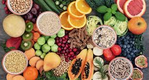

full fit life
nutrición

inicio
suplementacion
Nutrición
La nutrición es el proceso biológico
en el que los organismos asimilan los alimentos y los líquidos necesarios
para el funcionamiento, el crecimiento y el mantenimiento de sus funciones
vitales. La nutrición también es el estudio de la relación que existe entre
los alimentos, la salud y especialmente en la determinación de una dieta
equilibrada con bases a la pirámide alimenticia,

La nutrición es salud, ya que al lograr
una buena alimentación y una dieta saludable conseguirás una vida más sana
< y sin sobresaltos. Una buena nutrición depende fundamentalmente de que los
hábitos alimenticios sean los adecuados en cada caso particular. Por eso,
para llevar una dieta saludable y equilibrada te recomendamos seguir los siguientes consejos:
Debes consumir alimentos de los tres grupos alimenticios: verduras y frutas;
cereales; leguminosas y alimentos de origen animal. Cada uno de ellos en una
medida adecuada. Las frutas, verduras y hortalizas nos proporcionar las vitaminas,
minerales y fibra, que son los nutrientes fundamentales para el desarrollo normal
de nuestro organismo; los cereales nos aportan energía y el resto aporta principalmente
proteínas, hierro y grasas. Además, es importante que tomes mucho agua a diario, apartando
las gaseosas y el alcohol para ocasiones esporádicas, tal como indican los buenos cursos de nutrición.
Es muy importante que en tu dieta diaria implementes la constancia y el orden. Los hábitos alimenticios
no sólo tienen que ver con el tipo de alimentos que ingerimos, sino también con las conductas y costumbres.
Por eso, para empezar una vida sana debes modificar tus hábitos alimenticios y adquirir nuevos, esto sólo
requiere esfuerzo y continuidad.